La monnaie égyptienne est la livre égyptienne (EGP).
Le pays utilise la langue arabe comme langue officielle.
L'hymne national de l'Égypte est "Bilady, Bilady, Bilady" (Mon pays, mon pays, mon pays).
Le pays n'a pas de devise officielle.
Pour entrer dans le pays, un passeport ou une carte d'identité valide et valable 6 mois après la date du retour est nécessaire.
Il faut également un visa, valable pour 30 jours. Il coûte environ 25 USD et peut être demandé au consulat égyptien, à l'arrivée en Égypte ou en ligne.
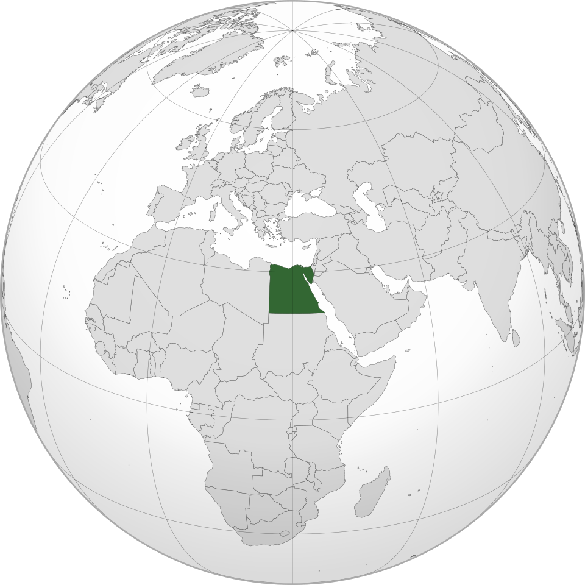
Localisation de l'Égypte dans le monde
L’Égypte est un pays situé entre l’Afrique du Nord et au Moyen-Orient, entre la Libye et Israël, et
possède un territoire assez large, d’environ 1 million de km². Les égyptiens et égyptiennes y sont plus
de 105 millions à y vivre. La langue officielle est l’arabe et la monnaie est la livre égyptienne.
La capitale du pays est Le Caire, et sa spécificité est que cette ville comprend aussi Gizeh, lieu où se
trouvent des célèbres pyramides. Les autres grandes villes du pays, sont Alexandrie, Louxor, Karnak ou
encore Suez.
Lieux
Découvrez les différents lieux mythiques du pays :
Alexandrie
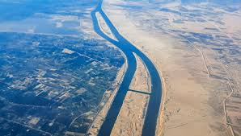Canal de Suez
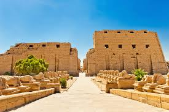Karnak
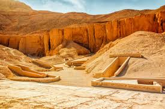Vallée des Rois
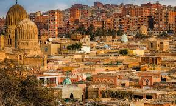Le Caire
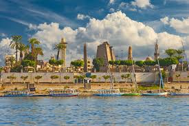Louxor
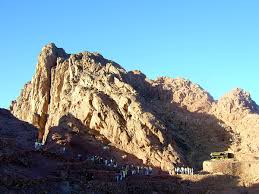Le mont Sinaï
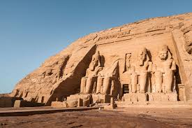Abou Simbel
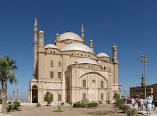Mosquée Mohammed Ali
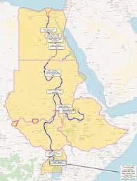Nil
Histoire
L’Égypte est et a toujours été une des grandes puissances d’Afrique du Nord et du Moyen-Orient, notamment
grâce au Nil qui passe dans le pays. C’est ici qu’une des première formes d’écritures est née : les
hiéroglyphes. Les pharaons et les traces qu’ils ont laissés (pyramides, sphinx...) forgent aussi
l’histoire de l’Égypte.
L’Égypte a ensuite été sous l’égide du Royaume-Uni, de 1882 à 1922, avant de prendre son indépendance.
Les dates importantes
Avant -30 av. J.-C.Égypte des pharaons-30 - 395Égypte sous l'égide de l'Empire romain395 - 642Période byzantine642Prise d'Alexandrie par les Arabes, début des califats arabes.1170Saladin prend le pouvoir en Égypte.1798 - 1801Expédition d'Égypte menée par Napoléon Bonaparte.1879 - 1952Égypte colonisée par les Britanniques.1953Indépendance de l'Égypte.
Personnages
Découvrez les figures importantes dans l’histoire de notre pays :
Saladin
Akhenaton
Toutankhâmon
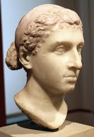Cléopâtre
Culture
L’Égypte est aussi un pays avec une culture spécifique, avec de grands bâtiments : Mosquée du Caire,
Sphinx de Gizeh, Pyramides..., mais aussi de magnifiques œuvres historiques